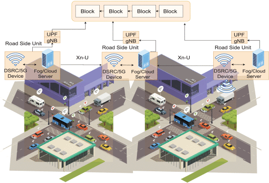

About
The main application areas for the enhanced capabilities of 5G are Enhanced Mobile Broadband (eMBB), Ultra Reliable Low Latency Communications (URLLC), and Massive Machine Type Communications (mMTC).
The use cases for 5G and 6G technology include revolutionary developments such as industry 5.0, augmented reality, autonomous transportation, eHealth, smart agriculture, digital twins, cobots, and robot navigation under three broad scenarios: the Internet of Senses, connected intelligent machines, and a connected sustainable world.
The research focus of this group is mainly on 5G & 6G communications, Software Defined Networking, Artificial Intelligence, Blockchain, Cybersecurity, and IMoT.
The use cases for 5G and 6G technology include revolutionary developments such as industry 5.0, augmented reality, autonomous transportation, eHealth, smart agriculture, digital twins, cobots, and robot navigation under three broad scenarios: the Internet of Senses, connected intelligent machines, and a connected sustainable world.
The research focus of this group is mainly on 5G & 6G communications, Software Defined Networking, Artificial Intelligence, Blockchain, Cybersecurity, and IMoT.
